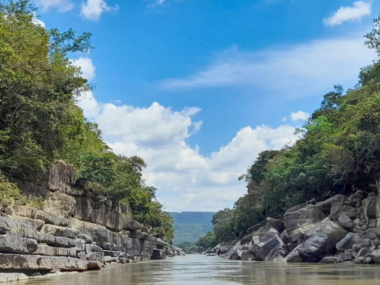
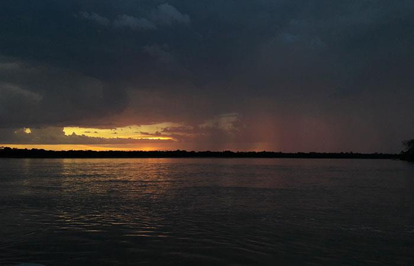

Principales Sitios Turísticos de San José del Guaviare

Raudal del Guayabero
El Raudal del Guayabero, en San José del Guaviare, destaca por su relevancia histórica y natural. Entrelazado con la colonización, la explotación del caucho y el turismo comunitario actual, alberga pinturas rupestres milenarias y actúa como corredor biológico. Su rica biodiversidad y aguas turbulentas ofrecen aventuras ecológicas.
~37,5km
Puerta de Orion
La Puerta de Orión, a 9 km de San José del Guaviare en la Serranía de La Lindosa, es una imponente formación rocosa de 12 metros de alto y 15 de base. Con dos orificios que permiten avistar el cinturón de Orión en diciembre, según la tradición local, es ideal para senderismo y conexión espiritual con la naturaleza selvática circundante.
~60 km
Laguna Negra
Laguna Negra, un espejo de agua sereno rodeado de selva densa en San José del Guaviare, es perfecto para avistamiento de aves exóticas y paseos relajantes en canoa. Esta joya natural invita a la contemplación de la biodiversidad amazónica, con aguas oscuras que reflejan la vegetación y un ambiente tranquilo para desconectar del bullicio urbano.
~15 km
Cerro azul
Cerro Azul, ubicado en San José del Guaviare, es un yacimiento arqueológico emblemático en la Serranía de La Lindosa. Famoso por sus pinturas rupestres de más de 8,000 años, representa escenas cotidianas, animales y símbolos indígenas. Esta formación rocosa de 200 metros de altura invita a explorar cuevas ocultas y conectar con la historia ancestral amazónica.
~120 km
Pozos Naturales
Pozos Naturales, en las cercanías de San José del Guaviare, forman un conjunto de piscinas cristalinas entre rocas esculpidas por el río. Ideales para nadar, bucear y relajarse, estas pozas turquesas ofrecen un refugio refrescante en la selva. Rodeadas de vegetación exuberante, combinan aventura acuática con la serenidad de la naturaleza guaviareña.
~18 kmCiudad de Piedra
Ciudad de Piedra, cerca de San José del Guaviare, impresiona con formaciones rocosas que evocan ruinas de una antigua urbe perdida en la selva. Estas estructuras naturales, moldeadas por el tiempo, invitan a caminatas exploratorias y fotografía. Entorno de biodiversidad y mitos indígenas, representa un testimonio geológico único en la región de la Orinoquía.
~25 kmTuneles naturales
Túneles Naturales, en la Serranía de La Lindosa de San José del Guaviare, son formaciones rocosas con cuevas, puentes y pozos de agua cristalina. Destacan por sus pinturas rupestres ancestrales, vestigios indígenas de miles de años. Este paisaje kárstico ofrece exploración aventurera y conexión cultural en un entorno de selva virgen y biodiversidad inigualable.
~34 km